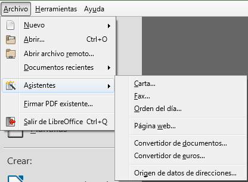

3.1. Assistents
Assistents
Els assistents a LibreOffice Writer són eines que automatitzen el procés de creació de documents predefinits. Aquestes eines us guien pas a pas per generar documents amb formats estàndard, com ara cartes, faxos, informes o fins i tot plantilles personalitzades. Els assistents redueixen el temps necessari per configurar un document des de zero, garantint que s'apliquin formats correctes i uniformes.
Tipus d'Assistents
LibreOffice Writer ofereix diversos assistents que podeu utilitzar segons les vostres necessitats:
-
Assistents de carta: Us ajuda a redactar cartes formals o informals, amb la possibilitat de seleccionar diferents formats de capçalera, peu de pàgina, adreces i salutacions.
-
Assistents de fax: Facilita la creació de cobertes de fax amb informació sobre el destinatari, l’emissor i els detalls del missatge.
-
Assistents d'informes: Automatitza la creació d'informes llargs i complexos, estructurant-los amb seccions, títols i taules de contingut.
-
Assistents de presentacions: Si necessiteu crear una presentació a partir de dades, LibreOffice ofereix un assistent per a Impress, l'eina de presentacions de la suite. Això permet generar presentacions coherents amb estils predefinits.

Com utilitzar un assistent
Per accedir als assistents en Writer, seguiu els passos següents:
- Aneu al menú superior i seleccioneu Fitxer > Assistents.
- Trieu l'assistent adequat per al tipus de document que voleu crear, com ara Carta, Fax o Informe.
- L'assistent us guiarà a través de diversos passos, on podreu triar opcions com el format del document, l'estil de la capçalera i peu de pàgina, i l'estructura general.
- Un cop hagueu completat totes les opcions, feu clic a Finalitza. El document es generarà automàticament amb les opcions seleccionades.
Configuració dels assistents
Assistents de Carta
L'assistent de carta us permet generar cartes formals o informals amb diferents opcions de format. Els passos per crear una carta amb aquest assistent són els següents:
- Inici: Trieu si voleu crear una carta personal o de negocis.
- Selecció de disseny: Trieu el format de la carta. Podeu seleccionar capçalera, peu de pàgina i altres detalls de presentació.
- Informació de l'emissor i el destinatari: Introduïu l'adreça de l'emissor, el destinatari i altres detalls com el títol, nom o data.
- Salutació i tancament: Seleccioneu la salutació i el tancament adequats, que poden variar en funció del tipus de carta que estigueu redactant.
- Finalització: L'assistent crearà la carta amb el format seleccionat. Podeu modificar-la posteriorment per afegir el cos del text.
Assistents d'Informe
L'assistent d'informes permet crear informes llargs amb múltiples seccions. Els passos són similars:
- Inici: Trieu el tipus d'informe que voleu crear.
- Estructura: Definiu les seccions de l'informe, com ara la introducció, els capítols i la conclusió.
- Taula de contingut: L'assistent pot generar automàticament una taula de contingut basada en els títols del document.
- Format: Seleccioneu l'estil d'informe i altres aspectes com numeració de pàgines, format de capçaleres i peus de pàgina.
- Finalització: Un cop completats tots els passos, l'informe es genera i queda llest per ser modificat o imprès.
Exemple pràctic: Creació d'una carta amb assistent
Suposem que voleu crear una carta formal utilitzant l'assistent de LibreOffice Writer. Seguiu aquests passos:
- Aneu a Fitxer > Assistents > Carta.
- Trieu l'opció de carta de negocis.
- A la finestra següent, seleccioneu un format amb capçalera i peu de pàgina.
- Introduïu les dades del remitent i del destinatari, com ara nom, adreça i data.
- Trieu una salutació formal com ara Benvolgut/da Sr./Sra.
- Configureu un tancament formal com ara Atentament.
- Feu clic a Finalitza i l'assistent generarà la carta amb el format seleccionat.
El resultat seria un document amb l'encapçalament, peu de pàgina, salutació i tancament ja configurats, a punt per afegir el cos de la carta.
| Text Only | |
|---|---|
Avantatges dels assistents
Els assistents de LibreOffice Writer ofereixen diversos avantatges:
- Estalvi de temps: Automatitzen tasques repetitives, com la configuració d'estils, capçaleres i peus de pàgina.
- Consistència: Asseguren que els documents segueixin un format i estil uniformes.
- Facilitat d'ús: Són fàcils d'utilitzar fins i tot per a persones amb poca experiència en la creació de documents complexos.
- Personalització: Els documents creats amb assistents es poden modificar posteriorment, permetent una gran flexibilitat.